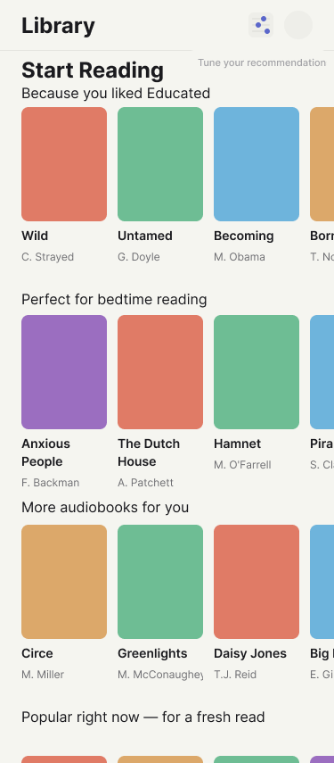
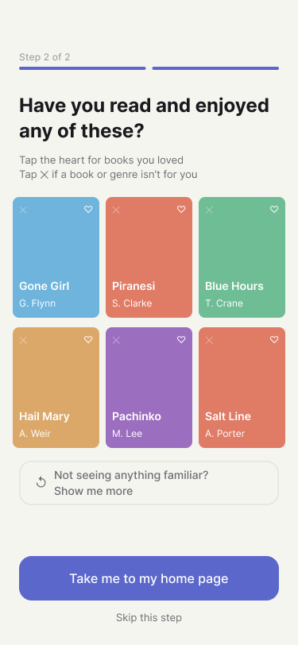

Library App Personalization
Redesigning library app onboarding so the first few taps after account creation shape a personalized home page across physical books, ebooks, and audiobooks — instead of defaulting every reader to the same bestseller list.
The problem
Redesign onboarding for a library app so the first few interactions after account creation directly shape what a reader sees on their personalized home page — across physical books, ebooks, and audiobooks — rather than defaulting to generic bestseller lists.
Scope covered three connected pieces: a taste-capturing onboarding flow, a book-detail recommendation feature ("readers who enjoyed this also read"), and a genuine A/B alternative onboarding path for comparison.
A taste-capturing flow that shapes the home page across books, ebooks, and audiobooks.
A book-detail "readers who enjoyed this also read" feature.
A genuine second onboarding path, built for direct comparison rather than as a minor variant.
Understanding the users
This was a self-directed design exercise rather than formal field research — no live user interviews were conducted. Instead, the design was grounded in platform standards, and personal frustration from using Libby and Borrow Box.

A personalised home screen after onboarding user flow.
What informed the design
Amazon's "customers who bought this also bought" was the direct model for a "readers who enjoyed this also read" feature, adapted to a reading-specific tone and mechanism — collaborative filtering on liked books, not purchases.
Material Design 3's window size classes (Compact/Medium/Expanded) grounded the "life stage" alternative onboarding concept and later informed the separate tablet breakpoint work.
Spotify's onboarding style ("how do you like to listen") shaped the question "Books, ebooks, or audiobooks?" — since "how do you like to read" doesn't cover all mediums.
Framing the opportunity
Core problem: genre alone gives a personalization system too little signal, and a system with no way to say "not for me" or self-adjust inevitably drifts back toward safe, generic bestseller recommendations — which is exactly what erodes user trust in personalization.

More control over personalisation with 'like' and 'not for me' gestures.
A persona was used to pressure-test the design: a frustrated reader who feels the app keeps pushing bestsellers rather than anything tailored to them. This persona surfaced several concrete gaps in the first draft.
Onboarding book grids leaned entirely on popular titles, biasing the signal from day one.
Only "liked" existed — there was no way to say "not for me."
The fallback shelf had no framing explaining why it appeared.
Onboarding also never explained that the reader's taps directly shaped their home page — a fourth gap that carried straight into the design decisions below.
Exploring solutions
Onboarding flow structure: genre picker → tap books you've read and enjoyed, with a refresh mechanism when a reader doesn't recognize anything in a given genre.
Placing the "show me more" button
Four options were generated and compared: a button under the "don't recognize any of these" prompt, a button grouped with the primary CTAs, an upgraded real button in the same spot, and an in-grid refresh tile. The team landed on an upgraded full-width button in its original position, after weighing discoverability against layout disruption.
Two alternative onboarding journeys
Explored as a deliberate divergent step before committing to one direction: a life-stage-first path (Child/Teen/Young Adult/Adult/Senior, reshaping UI complexity and content filtering) and a format-and-context-first path (reading vs. listening, tied to when/how someone actually consumes material). The format-first path was chosen to build out as a genuine A/B alternative.
The solution
Core onboarding and recommendation flow, built across six connected screens: project setup and shared styling rules, the genre picker screen, the book-tap grid with its refresh states, the book detail page's "also read" section, the personalized home page, and a flow map wiring the whole path into a clickable prototype.
Mid-fidelity wireframes showing the revised information architecture.
Decision 1: Iterating from the persona's pain points
Built directly from the persona review: onboarding microcopy explaining its purpose plus a mainstream/niche "adventurousness" toggle, rebalanced book grids (70/30 bestseller-to-backlist mix) plus a "not interested" gesture separate from liking, honest relabeling of the fallback shelf ("Popular right now — for a fresh read"), a standalone "tune your recommendations" screen reachable at any time, and an entry point plus flow map update tying it all together.
Final screens after two rounds of usability testing and iteration.
Decision 2: Refining "show me more"
The plain text link was replaced with a proper full-width button in its existing position, and the flow map's connector labels were updated to match.
Decision 3: Building a genuine A/B alternative
The original path was labeled "Onboarding A" for clarity, then a fully independent "Onboarding B" was built — a format picker, a context picker ("when do you usually make time for these"), a cross-format tap grid mixing books, ebooks, and audiobooks, and its own "Home page – variant B" — so the two personalization approaches could be visually compared side by side rather than overwriting one another. A follow-up pass reflowed the flow map into two clean rows once the second path made the original single-row layout overcrowded.
Validating through review, not live testing
No live usability testing occurred, as this was built as a portfolio project. Instead, the design was pressure-tested through structured review methods.
Auditing the first draft against the "frustrated, always-bestsellers" reader to surface concrete design gaps before building further.
Explicitly weighing multiple button-placement options against each other — discoverability vs. visual hierarchy vs. layout disruption — before selecting one.
Mirroring the same states and interaction patterns across Onboarding A and B so the two could be fairly compared as a genuine A/B pair.
Results & reflections
A completed A/B testing project, ready for the world.